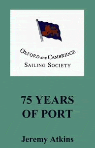

Obtain O&CSS burgees from the Hon Treasurer and the history of the Society ("75 Years of Port & Balls") from Amazon - as detailed below.
In view of the greatly reduced demand for Society ties and the substantial size of a re-order, the Committee has decided not to re-stock any ties. The current stock of ties is exhausted.
A few Society burgees remain. The price is £8 (£10 overseas) from the Hon Treasurer[email-link]. Please specify the address to which you would like the burgee delivered. Payment details will be sent once you have made your order.
History of the Society
Jeremy Atkins' history of the Society traces events from the founding meeting on 24th February 1934, up to the year 2008. O&CSS members’ successes, which are unparalleled by any other sailing club, include the following.
The Imperial Poona Yacht Club was formed just two months after the O&CSS, in a light-hearted reaction to the more serious intent of the Society. The book combines Poona’s irreverent history with the Society’s; formed as foes, but now bound in a book.
The hardback book comprises 160 pages and many photographs. It even includes a Forward (rather than Backward) by the late Prince Philip – but you will have to read it to find out why! The book is available for £20 plus delivery from Amazon[ext-link].
The title of the book comes two sources. The first is the Society’s penchant for maintaining and enjoying an impressive cellar of vintage port. The second is the fact that Poona, whose burgee consists of three red balls on a yellow background, is often described as “a load of balls”.

Available for £20 plus delivery from Amazon[ext-link].